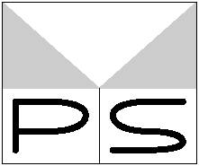

プログラミング・シンポジウム
http://www.ipsj.or.jp/prosym/ から https://prosym.org/ に移動しました。 (2020年7月3日)
過去のプログラミング・シンポジウム報告集の利用許諾についてを掲示しました。 (2020年12月18日)
ご案内
過去の記録
その他
幹事
- 横山 大作（明治大学）
- 大島 聡史（名古屋大学）
- 新屋 良磨（秋田大学）
- 三廻部 大（トレジャーデータ株式会社）
- 八木原 勇太（キヤノンＩＴソリューションズ株式会社）
- 渡辺 勇士（合同会社デジタルポケット，電気通信大学）